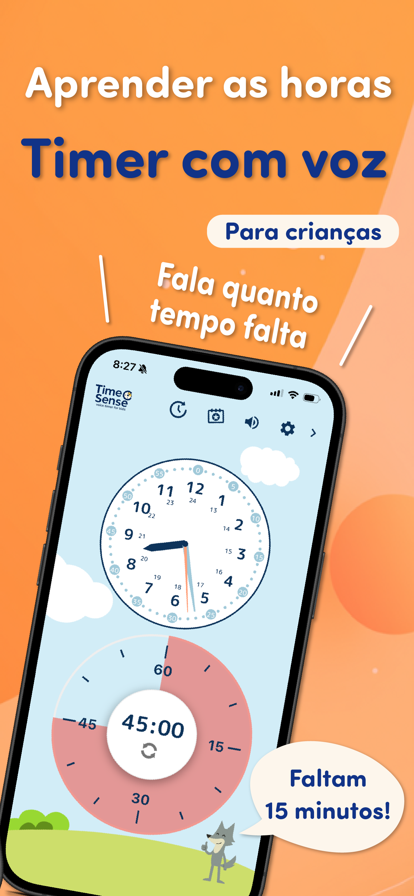

Timer visual para criancas
com lembretes por voz
Um timer visual acolhedor
que ajuda as criancas com a rotina da manha, a hora de dormir
e as transicoes do dia a dia.

 "Faltam 30 minutos."
"Faltam 30 minutos."

O que e o TimeSense?
TimeSense e um timer visual infantil criado para deixar a rotina mais leve. Ao mostrar quanto tempo falta e usar lembretes por voz com calma, ele ajuda as criancas a lidar melhor com transicoes, rotina da manha e hora de dormir.
Correria de todo dia,
frases que voce conhece bem...
com gentileza e incentivo.
Recursos do TimeSense
TimeSense foi pensado com base em psicologia infantil e estudos do desenvolvimento, para apoiar as criancas de um jeito natural e envolvente.
Veja o tempo.
Sinta a contagem.

O relogio analogico junto com o timer ajuda a entender rapidamente quanto tempo ainda falta.
Personagens com
avisos por voz

Os personagens falam com carinho no lugar dos adultos, guiando a crianca na contagem e no proximo passo.
Troque de personagem
para manha, tarefas e noite

Voce pode trocar o personagem conforme o momento do dia, como manha, tarefa ou hora de dormir, para manter a rotina leve e divertida.
Seis temas de cores


Amostras de voz
Escolha as vozes que mais combinam com o momento e com a personalidade da crianca.
De contagens simples a mensagens de incentivo, cada voz foi pensada para ajudar a agir com mais naturalidade.
Quatro personagens gratuitos
Os avisos básicos de Luma, Pico, Milo e Toto são gratuitos. Ouça as amostras de Luma e Pico abaixo.
 Luma
Luma Pico
Pico Milo
Milo Toto
Toto
TimeSense+ Vozes para cada momento
O Premium acrescenta aos avisos básicos vozes para a rotina da manhã, o dever de casa, a hora de dormir e outras situações.
 MiloDever de casa
MiloDever de casa TotoHora de dormir
TotoHora de dormir
Vamos ate o fim!"
Ja esta quase na hora de dormir."
Quando usar

Um aliado para substituir
o "anda logo!"
Deixe o timer e os personagens assumirem a correria da manha, sem precisar repetir "anda logo!" o tempo todo.

Modo foco ativado
"Faltam 5 minutos!" dito por um personagem ajuda a aumentar a concentracao e a motivacao.

Transicoes mais suaves
Ter dificuldade para mudar de atividade e normal. TimeSense ajuda com carinho na passagem da brincadeira para guardar as coisas ou estudar.
Uma palavra da equipe
Este app nasceu do desejo de comecar cada manha com mais leveza, mesmo nos dias corridos e nos momentos em que nosso filho tinha dificuldade para mudar de atividade.
Com o tempo restante mostrado de forma clara e personagens fofos dando avisos gentis, o TimeSense funciona como um parceiro da rotina, falando por voce quando necessario.
E um app de timer construido com cuidado e intencao educativa, ajudando as criancas a desenvolver autonomia e nocao de tempo aos poucos.
Esperamos que o TimeSense possa apoiar familias do mundo todo. Vamos adorar ouvir seu feedback!

FAQ
Reunimos aqui as respostas para as perguntas mais comuns.
Toque em qualquer item para abrir a resposta e as etapas de verificação.
Q. A tela não responde / não consigo tocar nos botões
A. O bloqueio infantil pode estar ativado.
O TimeSense tem uma função de bloqueio infantil que limita temporariamente o toque na tela para evitar que a criança pare o timer ou altere as configurações por engano.
Se a tela não estiver respondendo, primeiro verifique se o bloqueio infantil está ativado.
Como verificar
- Confira o ícone de engrenagem no canto superior direito da tela principal
- Se aparecer um cadeado no canto inferior direito da engrenagem, o bloqueio infantil está ativado
Como desativar
- Pressione e segure o ícone de engrenagem no canto superior direito
- Depois de alguns segundos, a tela de configurações será aberta
- Selecione Bloqueio infantil no menu
- Desative o bloqueio infantil
Importante
- Enquanto o bloqueio infantil estiver ativado, algumas ações na tela ficarão indisponíveis
- Isso não significa que o app esteja com defeito
Se ainda não resolver
Se o bloqueio infantil não estiver ativado, ou se o problema continuar, pode ser uma falha específica do aparelho. Envie um e-mail para hello@syncraft.dev.
- Modelo do aparelho
- Versão do sistema operacional
- Versão do app
Q. Sem som / a orientação por voz não é reproduzida
A. A causa pode estar nas configurações do aparelho ou do aplicativo.
O TimeSense oferece orientação por voz com personagens e efeitos sonoros. Na maioria dos casos, a falta de som está relacionada às configurações do aparelho ou do próprio app.
O que verificar
- Veja se o aparelho não está no modo silencioso
- Veja se não há fones ou caixas Bluetooth conectados
- Abra as Configurações de som pelo ícone de engrenagem e confirme se a orientação por voz e os efeitos não estão em OFF
- Se o idioma escolhido exigir um pacote de voz, tente novamente com internet estável
Importante
- Alguns idiomas podem ainda não ter suporte a voz
- O download do pacote de voz exige conexão com a internet
Se ainda não resolver
Se o problema continuar, entre em contato pelo menu de feedback dentro do app.
- Modelo do aparelho
- Versão do sistema operacional
- Versão do app
- Idioma em uso
Q. O timer para antes do fim
A. As configurações de economia de energia do aparelho podem estar encerrando o app automaticamente.
O TimeSense foi projetado para funcionar com estabilidade enquanto o timer estiver em execução, mas alguns aparelhos Android limitam bastante a atividade em segundo plano.
O que verificar
- Veja se o modo de economia de energia está desativado
- Veja se o TimeSense está fora da otimização de bateria
- Veja se a atividade em segundo plano está permitida
Se você usa Android
Alguns fabricantes aplicam um controle de bateria mais agressivo. Isso pode acontecer com mais frequência em aparelhos da Samsung Electronics, Xiaomi Corporation e OPPO.
Importante
- Esse problema é menos comum no iPhone e no iPad
- O nome das configurações pode variar conforme o fabricante
Se ainda não resolver
Se o problema continuar, entre em contato pelo menu de feedback dentro do app.
- Modelo do aparelho
- Versão do sistema operacional
- Versão do app
- O que aconteceu quando o timer parou
Q. Configurei notificações, mas elas não chegam
A. As configurações de notificação ou bateria do aparelho podem estar afetando o envio.
O TimeSense pode enviar notificações no horário configurado. Quando elas não chegam, normalmente há alguma restrição do próprio aparelho.
O que verificar
- Veja se o TimeSense tem permissão para enviar notificações
- Veja se Não perturbe ou Foco não estão ativados
- Veja se o modo de economia de energia está desativado
Se você usa Android
A otimização de bateria ou as restrições em segundo plano podem atrasar ou bloquear notificações. Os nomes das configurações variam conforme o fabricante.
Importante
As notificações do TimeSense dependem não só do app, mas também das configurações do aparelho. No Android, o comportamento pode variar conforme o modelo.
Se ainda não resolver
Se o problema continuar, entre em contato pelo menu de feedback dentro do app.
- Modelo do aparelho
- Versão do sistema operacional
- Versão do app
- Horário configurado para a notificação
- O que aconteceu quando ela não chegou
Q. Não consigo transferir os dados para outro aparelho / os dados são sincronizados?
A. No momento, o TimeSense salva os dados separadamente em cada aparelho e não oferece sincronização entre dispositivos.
Para manter o app seguro e respeitoso com a privacidade das crianças, o TimeSense não usa conta nem sincronização em nuvem. Os dados ficam apenas no aparelho em uso.
Dados que não são sincronizados no momento
- Configurações de perfil
- Progresso do cartão de selos
- Rotinas salvas
- Outras configurações do app
Importante
Em todos esses casos, os dados não são compartilhados automaticamente.
- iPhone ⇔ iPad
- iPhone ⇔ Android
- Android ⇔ Android (aparelhos diferentes)
- Troca de aparelho
Sobre compras
As informações de compra do plano pago (TimeSense+) podem ser restauradas se você usar a mesma conta da loja. Tente Restaurar compras dentro do app.
Perfis, selos e dados semelhantes não podem ser restaurados.
Se ainda não resolver
Se parecer que os dados sumiram ou você não souber o que aconteceu, entre em contato pelo menu de feedback dentro do app.
- Modelo do aparelho
- Versão do sistema operacional
- Versão do app
- O que você está vendo
Q. Qual é a diferença entre a versão gratuita e o TimeSense+?
A. Você pode usar o TimeSense gratuitamente, mas alguns recursos estão disponíveis no TimeSense+.
O TimeSense inclui os recursos principais do timer na versão gratuita, e também oferece o plano pago TimeSense+ para famílias que querem mais flexibilidade.
O que a versão gratuita oferece
- Recursos básicos do timer
- Orientação por voz com personagens
- Rotinas (com algumas limitações)
- Perfis (com algumas limitações)
- Cartão de selos
A versão gratuita pode exibir anúncios.
O que o TimeSense+ oferece
- Usar vários perfis
- Aumentar o número de rotinas salvas
- Desbloquear alguns limites de recurso
- Reduzir ou esconder anúncios
- Acesso a futuros recursos premium
Sugestão
Recomendamos começar pela versão gratuita e considerar o TimeSense+ se fizer sentido para a sua criança. Consulte a tela de compra dentro do app para ver as informações mais recentes.
Q. Comprei o TimeSense+, mas ainda não consigo usar
A. A compra pode ainda não ter sido refletida ou você pode estar usando outra conta da loja.
Se os recursos premium não aparecerem após a compra, o status da compra pode ainda não ter sido sincronizado corretamente.
O que verificar
- Confirme se você está usando a mesma conta da loja usada na compra
- Tente Restaurar compras no menu TimeSense+ do app
- Verifique a conexão, reinicie o app e tente novamente após alguns minutos
Importante
Como as lojas são diferentes, as informações de compra não podem ser compartilhadas entre plataformas.
- Mudança de iPhone para Android
- Mudança de Android para iPhone
Se ainda não resolver
Se o problema continuar, entre em contato pelo menu de feedback dentro do app.
- Modelo do aparelho
- Versão do sistema operacional
- Versão do app
- Nome do plano comprado
- Data e hora da compra, se você souber
Q. Quero cancelar minha assinatura
A. As assinaturas precisam ser canceladas pela conta da loja, e não dentro do app.
As assinaturas do TimeSense são gerenciadas pela App Store ou Google Play. Não é possível cancelá-las diretamente dentro do app.
Se você usa iPhone ou iPad
- Abra o app Ajustes
- Toque na sua conta Apple no topo
- Selecione Assinaturas
- Selecione TimeSense
- Escolha Cancelar assinatura
Se você usa Android
- Abra a Google Play Store
- Toque no ícone da sua conta no canto superior direito
- Selecione Pagamentos e assinaturas
- Selecione Assinaturas
- Selecione TimeSense
- Escolha Cancelar assinatura
Importante
- Excluir o app não cancela a assinatura
- Após o cancelamento, você poderá continuar usando até o fim do período atual
- Depois de cancelada, ela não será renovada automaticamente no próximo ciclo
Baixe o app
Experimente gratis hoje mesmo.
Com TimeSense+, voce libera todas as vozes e uma experiencia sem anuncios para acompanhar cada momento do dia.